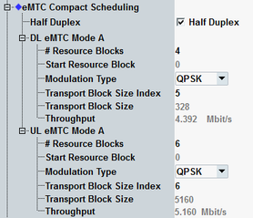

The parameters in this section configure the resource block configuration, modulation type and transport block size. Option R&S CMW-KS590 is required.
The settings apply if "Scheduling Type" = "eMTC Compact Scheduling".
To configure the settings, proceed as follows (for UL and DL):
Select the cell bandwidth. See "Physical Cell Setup".
Select the duplex mode (half duplex or full duplex).
Select the number of resource blocks.
Select the start resource block and the modulation type.
Select the transport block size index.
For valid parameter combinations and background information, see "eMTC Compact Scheduling".

Selects between half-duplex operation and full-duplex operation.
Remote command:"# Resource Blocks" selects the number of allocated resource blocks.
"Start Resource Block" specifies the number of the first allocated resource block within the narrowband.
"Modulation Type" selects the modulation type and influences the allowed transport block size indices.
"Transport Block Size Index" selects the TBS index. The resulting "Transport Block Size" in bits is displayed
Remote command:Displays the expected maximum throughput in Mbit/s (averaged over one frame). The value is calculated per downlink and uplink stream.
Remote command: